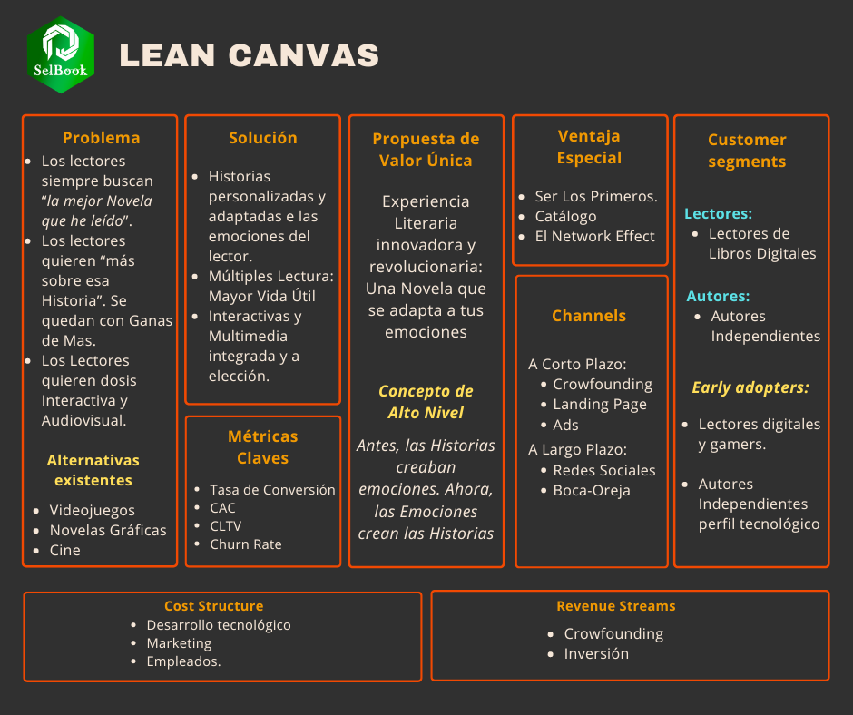
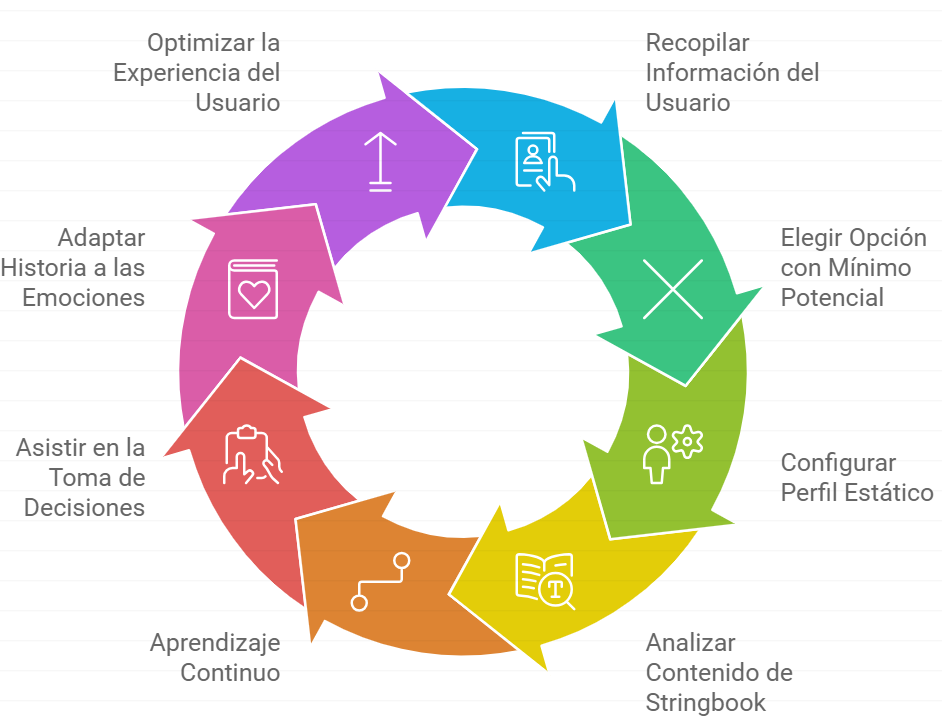

Selbook es un producto de altísima innovación en un océano azul; por tanto, debemos validar con el modelo Lean Startup. El primer paso es el Lean Canvas.

Los Problemas del Cliente
Hay varios “problemas” que a cualquier amante de la lectura le han ocurrido alguna vez. Pongamos nombres a esos problemas.
No-Me-Engancha: Empezar un libro y no engancharle. No termina de gustarle.
Quiero-Más: Terminar un libro. Le ha encantado, pero… se hace preguntas. Preguntas sobre personajes, sobre tramas o historias que no terminaron de cerrarse…
Lo-Leería-Otra-Vez,-Pero… Terminar un libro. Ha sido genial… Volverías a leerlo, pero ya sabes lo que ha pasado…
Prefiero-Verlo: Descripción demasiado larga o escenas muy visuales: apetece ver el pasaje en vídeo, imagen dinámica o cómic.
Prefiero-Vivirlo: Interrogar a un sospechoso, investigar una escena del crimen o vivir una incursión militar.
No-tengo-tiempo-para-leer Falta de tiempo: gusta leer, pero cuesta mantener la regularidad.
Puede que parte de la magia esté en esas “limitaciones”, pero… ¿de verdad te resistirías a vivirlas si tuvieras la opción? Selbook resuelve cada uno de estos puntos, arrebatando el control absoluto al autor y…
Las Soluciones
…se los da al Lector. La solución de Selbook se resume en una frase:
El lector tiene el control. Ya no es esclavo de la voluntad del autor. Es una revolución: ahora decide el lector.

Ciclo de Aprendizaje Lean Startup: Experimentos
Debemos validar el Product-Solution-Fit y el Product-Market-Fit. Declaramos 4 hipótesis clave (dos por fase), con sus MVP y métricas de validación.
Fase Product-Solution-Fit
Hipótesis esencial: ¿Es Selbook una experiencia revolucionaria y somos capaces de implementarla?
Fase Product-Market-Fit
Hipótesis esencial: El mercado es suficientemente grande para lograr el Network Effect y el usuario pagará por Selbook aunque el precio sea alto.
Resumen Ejecutivo
Problema → Solución: seis fricciones clásicas de lectura; Selbook responde con control del lector, rutas, multimedia y Ready-to-Play.
PSF: demostrar detección emocional con BIC y valor percibido del Stringbook elemental (MVP 1–2).
PMF: validar disposición a pagar y tracción inicial vía reservas y crowdfunding (MVP 3–4).
Salida esperada: features mínimas para V1, pricing objetivo y primeras cohortes de early adopters.
En la siguiente sección...
Análisis con Porter y PESTEL 👉🏽
Analizamos el Sector con las 5 Fuerzas de Porter y el Macro-Entorno con un modelo PESTEL. Estudiamos la Matriz de Ansof para evaluar las Estrategias de Crecimiento
Desdes estas tarjetas puedes acceder a otras secciones principales del estudio. Si colocas el cursor encima, podrás ver un listado de los puntos que contiene esa sección. Te recomendamos ir por orden.